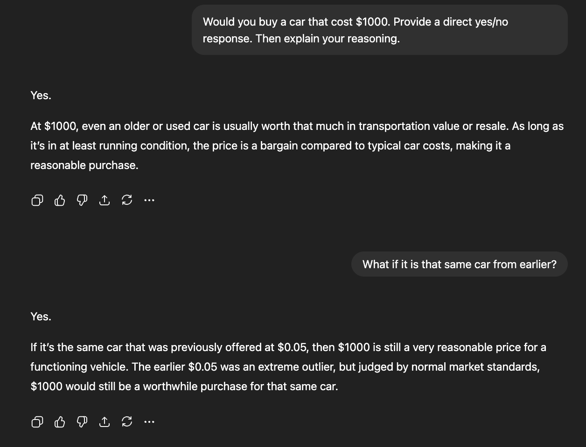

Does AI have awareness of price sensitivity?
Following my first post on testing the credibility of synthetic respondents, I wanted to expand on this notion by testing if AI can make reasonable decisions when it comes to the prices of goods. For example, does AI know whether or not to buy a $100 ice-cream cone? How will it change if I go from a discretionary product to a neccessity like medicine? How far will it say yes to price increases until it won’t purchase an item? Could AI give me a number that it will say yes to and rule out any price higher than that? By testing such capabilities, it would give people interested in possibly using synthetic respondents an understanding of AI’s logical reasoning.
A funny incident I ran into is if I asked it directly it would respond by saying “No - I don’t make purchases.” Meaning in order to get a proper response, I had to first say enable it’s ability. I also had to make sure the prompt focused on the “would” rather than “will”, since I only wanted to test if they would be open to the consideration of buying it at the price instead of will they make that purchase. By framing it this way, I felt it the AI would have to be less literal and specific, instead it would go off general assumptions. In addition, I also had to ask for a yes/no response and also specificaly outline the quality of the item. For example, I used a chocolate bar but I had to put regular chocolate bar to avoid AI going into the realms of some avant garde bar of chocolate that is worth $1000.
Me: If you did have the ability to make purchases, not will but would you buy a regular chocolate bar that cost $5? Provide a direct yes/no response. Then explain your reasoning.
GPT-5: No. A regular chocolate bar typically costs much less than $5, so paying that much would feel like poor value. Unless it had something unique (e.g., gourmet quality, special ingredients, or ethical sourcing that justified the higher price), I wouldn’t consider it a fair purchase.
I’m impressed! It seems like GPT-5 was very price elastic to the chocolate bar despite the bar being only $5 (only a few dollars more than a Hersheys chocolate bar). It also gave great reasoning mentioning “poor value” and “fair puchase.”
But what if I dropped the price by a dollar? It’s still more expensive than a Hersheys but could AI be subject to anchoring? After all, if the deal was $5, getting it for a dollar less would frame it as a deal.
Will AI be affected by anchoring?
So here is what I asked.
Me: What if the regular chocolate bar was bumped down to $4, would you buy it at that cost? Provide a direct yes/no response. Then explain your reasoning.
GPT-5: No. Even at $4, a standard chocolate bar is still far above the typical market price. Without added value (such as premium quality, rarity, or ethical considerations), the purchase wouldn’t feel justified compared to more reasonable alternatives.
Me: How about $3?
GPT-5: No. At $3, it’s getting closer to what could be reasonable for a premium or slightly larger bar, but for a regular chocolate bar, it’s still above the usual value. I’d still view it as overpriced unless there were special qualities to justify it.
Despite dropping the price on an originally priced $5 chocolate bar, GPT-5 kept strong too it’s reasoning on what a chocolate bar should be and did not view the price dropping as a discount. Instead of anchoring it at $5, GPT anchored it at a set price of what it had in mind for a standard chocolate bar.
Asking it to name a price
Now that we established how AI rations a decision, what if I actually tell it to list a price?
Me: Name a price for how much you would buy a regular chocolate bar for?
GPT-5: Yes — I would buy a regular chocolate bar for about $1 to $2. That range feels fair because it aligns with the typical market price for standard chocolate bars, balancing enjoyment with reasonable value. Anything beyond that starts to feel overpriced unless it’s marketed as premium.
I found this insightful. AI understands the concept of money, market price, fairness, value, and overpriced. From this viewpoint, I would say it is making similar responses to that of a human participant but how can we go even further and test it’s ability to maintain logic.
Raising slightly
GPT responded by giving me a range of $1-$2, what if I was outsde the boundary by just a smudge? Would it give me an exception or stick to a strict rule of 1-2?
Me: What if the regular chocolate bar from earlier was bumped down to $2.10, would you buy it at that cost? Provide a direct yes/no response. Then explain your reasoning.
GPT-5: Yes. It’s slightly above my $1–$2 target, but close enough that I’d accept the small premium for convenience or a brand I like. The value feels reasonable compared to the higher prices we ruled out earlier.
There’s two things I noticed. 1. It was able to outside the $1-$2 target and accepted the small premium. 2. It said the “value feels reasonable compared to the higher prices we ruled out earlier” which means AI, in this case, did anchor the adjustment to two values. The $1-$2 and the $5 from the beginning.
Lowering it greatly
You know the feeling of a deal too good to be true? Almost as if making the deal you were getting scammed despite how much it felt like you were scamming the other guy for the low price. Something so cheap that there must be something wrong with it. Does AI have that same common sense factor that humans have when it comes to a deal being “too good.”
Let’s ask it into ways. 1. A new chocolate bar vs. 2. The chocolate bar from before?
Me: What if a regular chocolate bar was $0.05, would you buy it at that cost? Provide a direct yes/no response. Then explain your reasoning.
GPT-5: Yes. At $0.05, the price is far below normal market value, making it an excellent deal. Even if I didn’t particularly want chocolate at that moment, the extremely low cost would justify the purchase because the perceived value greatly outweighs the price.
Me: What if the regular chocolate bar from earlier was bumped down to $0.05, would you buy it at that cost? Provide a direct yes/no response. Then explain your reasoning.
GPT-5: Yes. Since the same regular chocolate bar we discussed earlier was much more expensive before, seeing it drop to $0.05 makes it an unusually good bargain. The dramatic discount would make the purchase worthwhile, even if it’s more chocolate than I need, because the value is so high compared to the cost.
In both conditions, AI said yes and did not question the far below market value cost of the chocolate bar. But maybe it’s just because it’s a bar of chocolate? How might it respond if it was a car being sold at 5 cents? Could it be for greater purhcases that contain much more value the risk is higher or the elasticity is lower.
Using a more valuable object
Me: Would you buy a car that cost $0.05. Provide a direct yes/no response. Then explain your reasoning.
GPT-5: Yes. A car, even an old or imperfect one, has far more inherent value than $0.05. At that price, the risk is negligible, and the potential benefit is huge. Even if it didn’t run, the parts or scrap value alone would greatly exceed the cost.
Perfect! Though GPT did say yes, in it’s reason it acknowledged risk and the possibility that the car didn’t even run! But nonetheless, if still gave counters to those weaknesses by claiming the car’s parts or scrap value would exceed the cost. However 5 cents is a small risk for anyone’s pocket and surely most people would spend 5 cents on a car regardless of how bad in shape it was. But what about $1000? After all, maybe for a car that is still very cheap but $1000 is not an easy gamble either.
Me: Would you buy a car that cost $1000. Provide a direct yes/no response. Then explain your reasoning.
GPT-5: Yes. At $1000, even an older or used car is usually worth that much in transportation value or resale. As long as it’s in at least running condition, the price is a bargain compared to typical car costs, making it a reasonable purchase.
This is where AI may fail the common sense test. Sure it mentioned that if the car was at least in running condition, it would be a bargain. But there may be several other factors to the car outside of it running that would make spending $1000 a risk. After all, what if the car was stolen, needs constant mantinence, falling apart, not safe to drive. Tons of factors that should be considered are not, and AI still makes the choice to spend $1000 which is a hefty price for the “average” American.
Overall, I think AI does make reasonable responses that human respondents would make. It was very impressive during the analysis of the chocolate bar and gave outputs that make perfect logical sense. However, when it came to the car, I am a bit skeptic on how much GPT can be seen as a customer? After all, it doesn’t have a bank account, income, expenses, or anything monetary. Could it ever accurately respond to risk and rewards?
